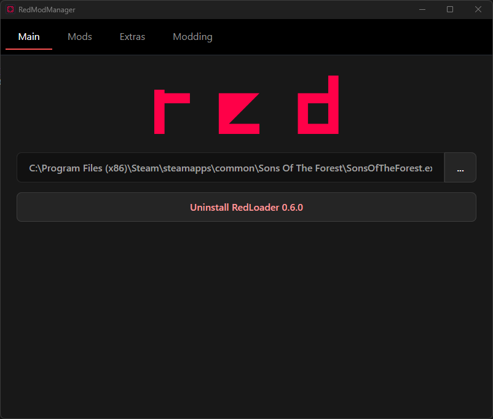
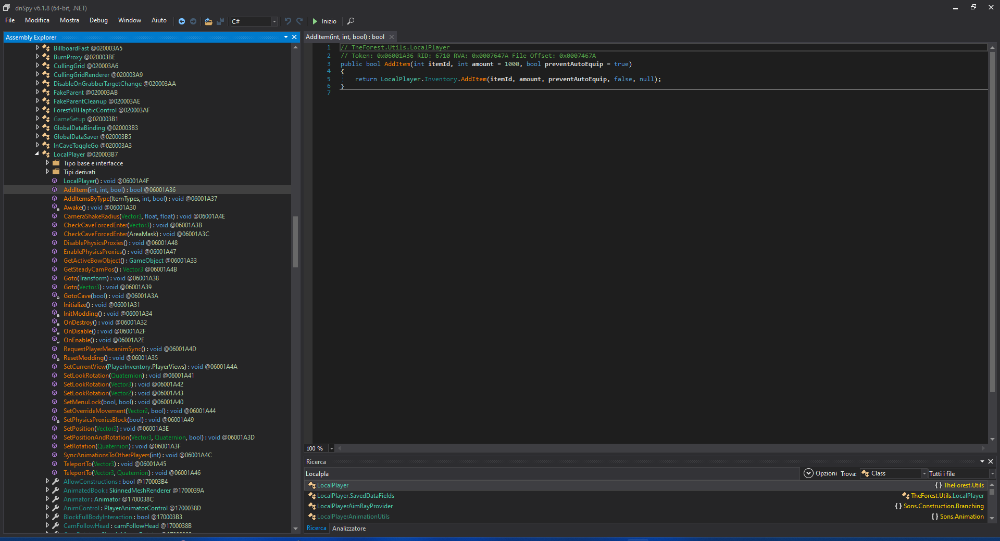

Must have programs & tools
Which are these must have programs?
There are some programs which are almost mandatory to make Sons of the Forest mods.
Those are mainly:
-
A code editor or IDE like Microsoft Visual Studio
community edition to code the mods (direct download link)
-
.NET Desktop Runtime 6.0 from Microsoft (direct link)
-
RedLoader and RedModManager, the mod loader for Sons of the Forest and it's manager which we will use to create mod projects
(download link)

-
UnityExplorer, an in game tool used to mess around with the game, so you can search and test stuff in game and then convert it to an actual coded mod.
We will install it from RedModManager in another lesson.

-
A decompiler like dnSpy to look into the game code and help us make mods
along with UnityExplorer.
